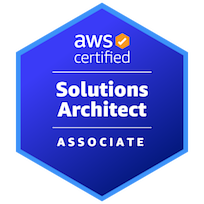

Oleksandr Kashuba
Hardware-to-cloud engineer: diagnose and build systems, manage Linux/Windows, design secure cloud platforms, and automate delivery pipelines for consistent, incident-free releases.
 AWS
AWS Azure
Azure Azure DevOps
Azure DevOps Terraform
Terraform Ansible
Ansible Docker
Docker Kubernetes
Kubernetes Jenkins
Jenkins GitHub
GitHub
 Python
Python Bash
Bash PowerShell
PowerShell Linux
LinuxSkills
AWS & Azure — IAM, secure VPCs, compute (EC2/ECS/EKS), managed DBs, serverless/app services.
Linux & Windows — hardening, systemd/logs, TCP/IP, DNS/DHCP/VPN, shell scripting.
Terraform & Ansible — modules, state/workspaces, secrets (Vault/SSM), CI/CD hooks, Packer images.
Docker, Kubernetes (ingress, autoscaling, RBAC), Helm/Kustomize, GitOps with ArgoCD/Flux.
GitHub Actions, Terraform Cloud, Docker Compose, kubectl/helm, jq/yq.
Prometheus + Alertmanager, Grafana, CloudWatch, Loki/ELK basics, metrics/logs/traces, SLOs.
IAM least-privilege, segmentation, secrets management, baseline hardening, threat-aware reviews.
RAID/NVMe/SATA, diagnostics, VMware/VirtualBox, cost-aware design.
Core Strengths
Systems & Hardware
- PC build/diagnostics, Windows/Linux admin (AD/GPO, backups, virtualization).
- Networking: VLANs, routing, VPNs, firewalls.
Cloud & Infrastructure
- AWS/Azure (IAM, VPC/VNet, compute/storage).
- Secure, cost-efficient designs; hybrid on-prem + cloud.
Infrastructure as Code & Automation
- Terraform modules; Ansible for configs/patching.
- Repeatable builds, drift detection, CI/CD integration.
DevOps & Delivery Engineering
- CI/CD (GitHub Actions/Azure DevOps/Jenkins), release pipelines.
- Docker, Kubernetes (EKS/AKS), Helm, logging/metrics.
Reliability & Troubleshooting
- Incident response, RCA, performance debugging.
- Dashboards/alerts, noise reduction, prevention focus.
Certifications
 AWS Cloud Practitioner
AWS Cloud Practitioner

AWS Solutions Architect AssociateEducation
- Bunker Hill Community College — Computer Science, 2018–2021 (Focus: C#, Java)
- National Academy of Internal Affairs — Law, 2014–2018